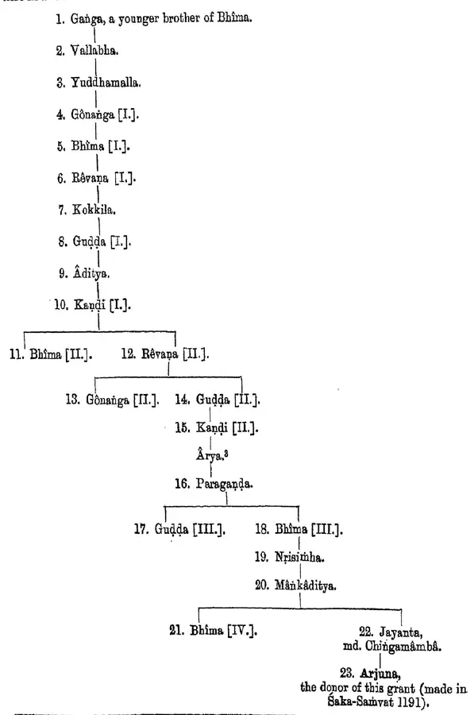

Dibbida plates of Arjuna of the Matsya family; Śaka-Samyat 1191
No. 14.—DIBBIDA PLATES OF ARJUNA OF THE MATSYA FAMILY;
SAKA-SAMVAT 1191.
SAKA-SAMVAT 1191.
By F. KIELHORN, Ph.D., LL.D., C.I.E.; GÖTTINGEN.
These plates were received by Dr. Hultzsch, in October 1897, from the Collector of the Vizagapatam district, and are deposited now in the Madras Museum. They were found in
1 Instead of kudî-nar-kal, 'the true standard of the city,' the Tafijâvûr inscriptions (South-Ind. In Vol. II. No. 6, paragraph 1; No. 7, 1; and No. 8, 1 and 8) have kudîhai-kal, 'the standard of the city.'
2 This symbol appears to denote the weight of one kaļačju.
3 I.e. a gold coin named after, or bearing the name of, Madhurântaka. This was the name of the son of Chôla king Gançarâditya and was also a surname of Râjèndra-Chôla I.; see above, Vol. IV. p. 331.
4 No. 109 of the Government Epigraphist's collection for 1892.
5 Âdhi-pura is the Sapskrit equivalent of the Tamil Orriy-ar, 'the mortgage village.'
6 From an inked estampage, prepared by Mr. T. P. Krishnasvami Satri, M.A.
7 Samê is incorrectly used instead of samâdyâm.
8 This may have been the father or preceptor of the donor.
village of Dibbida Agrahâram,1 in the Vîravilli tâluka of the Vizagapatam district. I edit the inscription which they contain from an excellent impression, supplied to me by Dr. Hultzsch.
These are five copper-plates, the first of which is inscribed on one side only, and each of which measures about 9" broad by 3" high. They are numbered in Telugu figures, which are engraved near the proper right margin of the second side of each plate.2 The plates have slightly raised rims, and, with the exception of the fifth plate which is broken in three pieces and of which a small marginal piece is missing, they are well preserved, so that the writing on them nearly throughout may be read with absolute certainty. The plates are strung on a ring which had not been cut when they were received by Dr. Hultzsch. This ring is about 3" in diameter and " thick, and has its ends secured in a seal which bears two fishes, in relief, on an elliptical surface of about 1" by ".—Though not very uniform, the writing, on the whole, is well engraved. The characters are intermediate between those of the latest Eastern Châlukya inscriptions3 and the Telugu characters, properly so called. On the forms of individual letters only few remarks are necessary. The signs for th and dh throughout are open at the top (e.g. in âvasatha, l. 36, and raîndhra, l. 31), and the sign for bh is generally open at the bottom (e.g. in vallabha, l. 1). The sign for d (e.g. in Pândava, l. 30, and Paragaîndça, l. 25) has no top-stroke (talakattu) and therefore closely resembles the l of the Eastern Châlukya inscriptions; on the other hand, a top-stroke is employed in the sign for l (in ajîgalan=, l. 12, bhilla-taruh, l. 59, and -tâlah, l. 61), the right top of which, besides, is formed into a loop.4 For the initial ri we have an unusual (perhaps incorrect) form in Rîgvêddâhyâ- at the end of line 39; and the signs for the medial i and t are hardly ever, if at all, properly distinguished. The size of the letters varies between about " and ".—The language is Sanskrit,5 but the description of the boundaries in lines 52-64 contains some Telugu words. Up to line 36 the inscription is in verse, and five more verses occur in lines 65-73. In respect of orthography, the chief points to be noted are that consonants (especially g, d, t, b and bh, but also ch, j, t, d, dh, p and v), which follow upon an anusvâra, are frequently doubled; and that, when such is the case, bh and dh are doubled by prefixing to them the same aspirated letters,6 except in the word vasumâddharâîn in line 68. Before r, t is doubled in muni-ttridaša-, l. 5; and y is doubled after t in tritiyyâ, l. 32, and pâlanîyyah, l. 71. Besides, instead of mn we have mn in avatîrnnas, l. 6, and mn in Jâtîkarnna-, l. 41.
The inscription records (in vv. 20, 21 and 26) that on Saturday, the Akshaya-tritiyâ of the month Vaisâkha of the Šaka year counted by the moon (1), the apertures of the body (9), the earth (1) and the moon (1), i.e. of Šaka-Samvat 1191, the chief Arjuna of the Matsya family, for the spiritual welfare of his father Jayanta, granted to certain Brâhmanas, as an agrahâra, the village of Drubbidi, which he called Jayanta-Nârâyana after his father. The full genealogy of the donor (in vv. 1-19) is as follows:—
From the lotus on Vishnu's navel sprang Brahman, from him Atri, and from him Kasyapa. In his lineage was the sage Nâranga, who one day, while wandering in the sky, saw the river Matsyâ which rises on the Mukunda mountain, descended to its banks, and engaged there in austere penance. To disturb the sage, the frightened Indra sent the Apsaias Mañjughôshâ. By the sage's curse she was changed into a fish (matsyâ), swallowed the semen which the ascetic had thrown into the water, and in due course gave birth to a son who was
1 The ' Dibbadee Agrahâram ' of the map, Indian Atlas, No. 108, Long. 82° 66' E., Lat. 17° 48' N.
2 The figure '5' of the last plate is almost entirely effaced.
3 Compare, e.g., the Chellûr plates of Kulôttunga-Chôđadêva II., Ind. Ant. Vol. XIV, p. 55 ff., Plates.
4 In ajîgalan=, l. 12, the loop does not show on the front of the impression, but is clearly visible on the back of it.
5 In the word ajîgalat, mentioned in the preceding note, the writer has used the aorist of the causal, instead of a past tense of the primitive verb.
6 We similarly have garbbhahn instead of garbbhaîn, in line 12, and Fudhdhamallas instead of Fuddhamallus, in line 20.
called Satyamârtaṇḍa (vv. 1-8). When Jayatsēna, the lord of Utkala,1 came to know this boy, he gave to him in marriage his daughter Prabhāvatī, and appointed him to rule over the Oṇḍavādi2 country (vv. 9 and 10). In the Matsya family, founded by Satyamârtaṇḍa, there was a long line of chiefs (rājan, nripa, bhāpa, etc.), whose names (from vv. 11-19) are given here in a tabular statement.

1 Iz. Orissa.
2 Oṇḍa is one of the names of Orissa; see South-Ind. Insor. Vol. I. p. 97, and above, Vol. IV. p. 315.
3 Ârya is not numbered because apparently he was not a ruling chief.
Of the village granted, two shares were set aside for the gods Hari and Hara1 (l. 51) while one share was assigned to each of the following twenty Brâhmapas (ll. 37-51): The Purôhita (or family priest of the chief) Vâmadèva, a Sôma-yâga sacrificer, of the Bhâradvâja gôtra; the teachers of the Rîgvêda Mêrubrahman and Viddana of the Harita gôtra, Nâmana of the Kauñdinya gôtra, Vennakûta of the Šâlâvata gôtra, Pôtaśarman of the Vâdhûla gôtra, Rêmana of the Mudgala gôtra, and Dommana of the Bhâradvâja gôtra; the students of the Rîgvêda Vennakûta of the Harita gôtra, Mânaśarman of the Šâlâvata (?) gôtra, and Yajñamûrtyârya of the Kuñdina (Kauñdinya) gôtra; the teachers of the Yajurvêda Akoñdi of the Vatsa gôtra, Bhîmêśvarârya of the Bhâradvâja gôtra, Šrîrangârya of the Kauñdinya gôtra; Vîrabhadrêśvarârya of the Gautama gôtra, and Lôkanâtha of the Kâśyapa gôtra; the students of the Yajurvêda Râghava of the Mudgala gôtra and Purushôttamaśarman of the Gautama gôtra; the student of the Kâpya sâkhâ (of the Yajurvêda) Mâdhavârya of the Jâtûkarpa gôtra; and the student of the Šrî-bhâgavata (Purâpa) Mâtikanârya of the Harita gôtra. The grant made in favour of these donees included the services or taxes,2 due from the village artisans, viz. the carpenter, goldsmith, barber (?), blacksmith, potter and sesamum-grinder (v. 22); but apparently3 was exclusive of eight drônas4 of land which had been previously given by the chief to the minister Peddana (ll. 66 and 67).
The boundaries of the village were (ll. 52-64): 'On the east, a babûl tree on the northern side of the embankment of the tank of Mânki-Nâyaka;5 to the south-east of this, a house;6 thence (the village of) Kâkatikhañdi; thence the embankment east of a nimba tree; thence the embankment of (the) Edṛabanda (tank); thence an ant-hill; (and) thence the northern corner of the embankment of the tank of the low-caste people. On the south-east of the village, a fixed7 stone; to the west of this, the tamarind trees of Tûr[ûru]; (and) thence the bricks of a temple. On the south-west of the village, a garlic field on the west of a poison-tree; thence a house of bricks; thence the space between a wood-apple tree and a poison-tree; thence a bhiyya tree; thence the tamarind trees of Anupumâli; thence a green piece of land to the south of Bođdapâdu; thence an ant-hill; thence three tamarind trees; thence a young palmyra tree (and) thence a stone on an ant-hill. On the north-west of the village, a . . . . stone on the top of a hill; on the east of this, a grinding-stone; thence a shed and a rock; thence a svarnapushpî tree; thence a kshîra-tree; thence a . . . . ant-hill; thence an old fixed stone; (and) thence an ant-hill. On the north-east of the village, a fixed large stone.'
Lines 67-72 of the inscription contain three of the ordinary imprecatory verses.
Regarding the chiefs mentioned in this inscription I have not obtained any information from other sources.8 Nor am I able to identify any of the localities, except the village of Drubbiđi itself, which must be the Dibbida Agrahâram where the plates were found.
The date of the grant regularly corresponds, for Šaka-Samvat 1191 expired, to Saturday, the 6th April A.D. 1269. On this day the third tithi of the bright half of Vaisâkha ended 6 h. 6 m. after mean sunrise, and the day therefore was the proper day for the Akshaya-tritiyâ festival.9
1 I.e. Vishpu and Šiva; compare Ind. Ant. Vol. XIV. p. 58, l. 70.
2 Compare ibid. l. 54: tair=dâłya-karam=apy-tâhyô brâhmañdbhyô=âaddt=tadâ.
3 The passage in which this statement occurs is mutilated in the original.
4 I.e. 'as much land as is sown with a drôna of corn.'
5 I suspect that this is another name of the chief who above, in the genealogical table, is called Mânkâditya.
6 Dhishni is perhaps the same as dhishnya. 7 Khâta seems to be used in the sense of nikhâta.
8 A Mataya family apparently is mentioned in line 19 of the Chîpyurupalle (in the Vizagapatam district) plates of the Eastern Chalukya Vishpuvardhana I. (of A.D. 682); see Ind. Ant. Vol. XX. p. 17.— According to Mr. Sewell's Lists of Antiquities Vol. I. p. 15. Sir W. Elliot's collection contains some inscriptions of a 'Mahâmaṇaltīvara Mânkâditya Mahârâja,' from Mudduru in the Vîravilli tâluka.
9 See Ind. Ant. Vol. XXVI. p. 179.
TEXT.1
First Plate.
| 1 | Svasti2 | Šri-vallabhasy=ásin=nábhyâm=aâm[bh]bhôru[ham]=m[ahat] | [[*]] |
| 2 | tatô | Brahmâ jagat-karttâ tasmâd=Atrir=abhút=kramât | [|| 1*] |
| 3 | Kaśyap-ákhyas=tatas=tasya | Nāraṅggô munir=anvayê | [[*]] |
| 4 | kadâchid=aâmbbarê gachchhan=sa dadarša | mahâ-nadîm | [|| 2*] |
| 5 | Mukuñdda-giri-saâmbhhútâm=muni-ttridaša-sêvitâm | [[*]] |
Second Plate ; First Side.
| 6 | prasanna-salil-âmbbhôjâm=Matsy-ákhyâm | bhbhuvi viárutâm | |(||) [3*] |
| Avatîrna(ṇna)s=sa | |||
| 7 | tat-tîrê ghôraâm chakrê tatas=tapah| sva-pada-chyuti-bhîtêna | Śakrêpa prê- | |
| 8 | shitâ tadâ|(||) [4*] | Nanartt=âpsarasâm=âdyâ Mamjjughôshâ munêh | |
| 9 | purah| amôghaâm sô=srijad=vîryyaâm drishtvâ tâm | ||
| 10 | kâma-vihvalah|(||) [5*] | Chikshêpa cha jalê vî[r*]yyâm tapô-vighna-krudhâ ta- | |
| 11 | tah| šasâpa cha munir=nnadyâm bhbhava matsy=êti tâm kshapât|(||) [6*] | ||
| S=âjîga- | |||
| 12 | lan=munêr=vîryyaâm sâpa-matsyâ sur-âângganâ| sadyô garbhbhaâm(rbbhaâm) ddadhau ta- | ||
| 13 | tra kâlê cha sushuvê sutaâm|(||) [7*] | Trikâla-jñaiś-śisus=tatra munibhi[r]=vvi- | |
Second Plate ; Second Side.
| 14 | hita-kriyah| Satyamârttaânda-nâm=âsâd=atulya-bala-vikramah|(||) [8*] | Taâm viditv=[Ô]tka!-â- |
| 15 | dhîsô Jayatsênô narâdhipah| prâdât=Prabhâvatiâm tasmai sva-putrîn subha-laksha- | |
| 16 | ṇâm|(||) [9*] | Abhishiktas=tu tên=âsâv=Odđavâdi-samâhvayê| dêsê prabhrashta-râ- |
| 17 | janyê mahîm chiram=apâlayat|(||) [10*] | Khyâtâs=tadvaânsa-samâbhhûta-râjâ- |
| 18 | nô bahavô gatâh| Bhimabhûp-ânujas=tasmin=van- | |
| 19 | sê=bhûd=Gaângga-bhûpatih|(||) [11*] | Tasmâd=Vallabha-bhûpâlô Yu. |
| 20 | dhdha(ddha)mallas=tatô nripah| tasmâd=Gônaângga-nâm=âsâd=Bhimas=tasmâ | |
| 21 | n=nrip-ôttamah|(||) [12*] | Rêvan(ṇ)-ákhyas=tatas=tasmât=Kokkilô nâma bhû |
Third Plate ; First Side.
| 22 | patih| Gudđa-nâmâ sutas=tasya tasmâd=Âditya-bhûpatih|(||) [13*] | Kaîndđ nâmâ nripas=ta- | |
| 23 | smât=tasmâd=Bhimanrip-âhvayah| Rêvanô(ṇô)=varajas=tasya tasmâd=Gônaângga-bhûpatih|(||) [14*] | ||
| 24 | Gudđas=tasy=ânujô bhûpas=tasmât=Kaîndđi-nripô-bhavat| taj-jâd=Âryya-nripâd=â- | ||
| 25 | t=Paragaîndđa-nripas=tatah|(||) [15*] | Gudđa-bhûpas=tatô Bhima-bhûpas=tasy=ânu | |
| 26 | nripah| Nrîsiânhas=tasya putrô=bhûd=bî(bhî)mô Matsyakul-ôttamah|(||) [16 | ||
| Tasy=â- | |||
| 27 | sîd=râja-ćâ[r*]ddâlô Mâinkâdityô mahîpatih| tasmâd=vanša-pradîpô=b|} | ||
| 28 | d=Bhîmô Bhîmâgraj-ôpamah|(||) [17*] | Tasy=ânujô mahîpâlô Jayaînttô jaya- | |
29 kshapah | tasy=âsîd=agra-mahishî Chînggamâmbb[â] yasasvinî || [1*] Ta-yim.
jjâtô=rjju-
Third Plate; Second Side.
30 nas=tasmât=Pâmđav-Ârjjuna-vikramah | têna satya-pratijîêna dattam pra-tiya-
31 tô=dhunâ || [19*] ¹Sâk-âbdê chamdra-ramdhra-kshiti-šasî-gañitê y=âkshay-âdya
tri-
32 tiyyâ(yâ) Vaisâkhê mâsi tasyân Ravisuta-divasê Matsya-vamê-Ârjjun-êsah [*]
33 viprâbhyô vêda-vidbhyah kshitipati-tilana(ka)s=Chînggamâmbbâ-am-a-
34 prâdâd=da[t*]tv=âgrahâram vimala-matir-idam sâsanam sâsit-ârih || [2*]
35 ²Jayamtta-Nârâyana-nâma kritvâ grâmô=dya vô Drubbidir-ârkka-chanîdram :
s-âranya-
36 sasy-âvasathah pradattah pitu[r*]=mmam=âmutra sukhâya viprâh || [3] [21*]
Asminn=agra-
37 hârê pratigrahîtâra imê pratyêkam=êkaika-bhâginah | Bhâradvâja-gotrah.
Fourth Plate; First Side.
38 purôhitô Vâmadêva-sômayâjî | Vatsa-gôtrô Yajurvêd-âdhyâp-
39 ka Âkomđđi-nâmâ | Rîgvêd-âdhyâpakô Harita-gôtrô Mêrubrahmâ | Rîga-d-
âdhyâ-
40 pakah Kaumđđinyô Nâman-âkhyah | Rîgvêd-âdhyâyî Harita-gôtrô Vennakûta-
nâmâ |
41 Jâtûkarnna(rṇṇa)-gôtrah ³Kâmđđava-sâkh-âdhyâyî Mâdhavâryyah | Yajurvêd-
âdhyâpakô
42 Bhâradvâja-gôtrô Bhîmêsvarâryyah | Yajurvêd-âdhyâpakah Kaumđđinya-gô-
43 tra Šrîranggâryyah | Yô(ya)jurvvêd-âdhyâpakô Gautama-gôtrô Virabhadrêsvarâ-
44 ryyah | ‘Šrîbluâgavat-âdhyâyî Harita-gôtrô Mâmkanâryyah | Mudgala-grôlgô,trô
Yaju-
45 rvvêd-âdhyâyî Râghav-âkhyah | Rîgvêd-âdhyâpakasé=Šâlâvata-gôtrô Vennakûta-nâmâ |
46 Kâsýapa-gôtrô Yajurvêd-âdhyâpakô Lôkanâdha(tha)-nâmâ | Gautama-gôtrô Yaju-
47 rvvêd-âdhyâyî Purushôttamaśarmmâ | Rîgvêd-âdhyâpakô Vâdhûla-gotrah⁵ Pô.⁶
Fourth Plate; Second Side.
48 taśarmmâ | Rîgvêd-âdhyâpakô Mud[g*]ala-gôtrô Rêmana-nâmâ | Rîgvêd-âdhyâpakô
Hari-
49 ta-gôtrô Viddan-âhvah | Rîgvêd-âdhyâpakô Bhâradvâja-gôtrô Domman-âkhyah |
[Šâlâvata P]⁷-
50 gôtra Rîgvêd-âdhyâyî Mânaśarmâ | Kumđina-gôtra [Ri].
51 gvêd-âdhyâyî Yaj[ñ]amârtyâ[r]yyah⁶ [[*]] dêvô(vau) Hari-Harâv=êkaika-bhâ-
52 ginô(nau) || [3] Adha(tha) grâma-sîmâ [[*]] Pûrvvatah⁶ Mâmkinâya-
53 ka-tatûka-sôt-ûttara-pârsvê ba[r]bbûrah êtad-âgnêya-
54 tô dhishdnih¹⁰ atah Kâkatikhaindđih, atô nihbba-pûrvva-sêtuh a-
¹ Metre : Sragdharâ.
² Metre : Upajâti.
³ Read Kâyva-.
⁵ Originally 'gôtrô was engraved.
⁴ Originally Šrtibâgravat. was engraved.
⁶ Originally Ppô. was engraved.
⁷ This word is almost entirely effaced, and the reading is very doubtful. The writing in line 50, and in line 51 before the word dêvô(vau), is rather carelessly engraved.
⁸ Read Ƙajñamîrtyâryyah.
⁹ Here, and in other places below, the rules of saindhi have not been observed.
¹⁰ This is clearly the actual reading. The intended reading probably is dhishnih, as in l. 58.
55 ta Edžabarindda-sêtuh atô valmîkam atô=întyaja-tatâka-sêt-û
56 ttara-kôna[h] [|*] grâm-âgnêyatah khâta-şilâ êtat-paşchimatas=Tûr[ûp]-
Fifth Plate; First Side.
57 [ra?] chimchâ atah prâsâd-êshtakâh [|*] grâma-nirurutyâm1 vishataru-pa
58 şchima-grîmjjanam ata ishtakâ-dhishni[h] atah kapittha-vishataru-madhyam
59 atô bhilla-taruh atah Anupumâli-chimchchâh atô Bođđapâti dakshi
60 pa-pasuruguniya atô valmîkam atas=tri-chimcchâh atô 2bâla-tâ
61 lah atô valmîkê şilâ [|*] grâma-vâyavyê parvvat-âgra-korchoche
62 şilâ atah prâchyâm nûru-şilâ atô 3maîtțapa-drishatau(dau) ata sva
63 rnçapushbî(shp!) atah kshîra-taruh atah krôlu-valmîkam atah purâ
64 pa-khâta-şilâ atô valmîkam [|*] [grâm-ai]şânyê(nyâm) khâtâ mahatî şil=êti [||*]
65 Takshaka4 svarçparâ(kâ)ras=cha ksh[aurikah?]5 ka[r*]mmakârakah [|*]
kulâlas=ti-
Fifth Plate; Second Side.
66 la-[ha]înttâ [cha] pradattâ grâma[-kârukâ?]6h |(ll) [22*] Peddan-âmâtyasya
purâ-
67 tana-dattam mê=shtça-drôça-mâna-[n ?] . . . . . [kshê?]tram [||*] 8Sva-dattâm
ppara-dattâm vâ
68 yô harêt=tu vasunddharâm [|*] [shashțim]9 vvarsha-sahasrâni vishtħâyâ-
69 m jâyatê krimi[h] |(ll) [23*] Sva-dattâ[d*]=dvi-guçam pp[u]nyam 10paradatt-
ânupâlanam [|*]
70 paradatt-âpah[â*]rjêna sva-dattam nishphalam bhavêta(t) |(ll) [24*]. Şatrun=âp
. kritô dha[r]mmaç
71 pâlainiyyah(yah) prayatnetah[|*] şatrur=êva hi şatru syâd=dha[r]mmas=şatru
72 [r]=nna kasyachit |(ll) [25*] Matsya-vamša-pradîp[ê]na Jayamitta-nçipa-sûnun
[|*] datta-
73 m=A[r]jjuna-bhûpêna sâsanam [dh]dha[r]mma-sêtunâ |(ll) [26*] Şrî şrî şrî [||'
1 Read -nairritydîn.
2 The reading may possibly be bhâla.
3 The ordinary Sanskrit spelling would be maṇdapa.
4 Metre: Şilâka (Auushțubh).— Comparé Ind. Ant. Vol. XIV. p. 58, ll. 51-54.
5 With the exception of part of the sign for au, the letters in these brackets are broken away.
6 The aksharas in these brackets, which I have conjecturally supplied, are entirely broken away.
9 The word in these brackets is entirely broken away.
10 Originally paraddatt- was engraved.